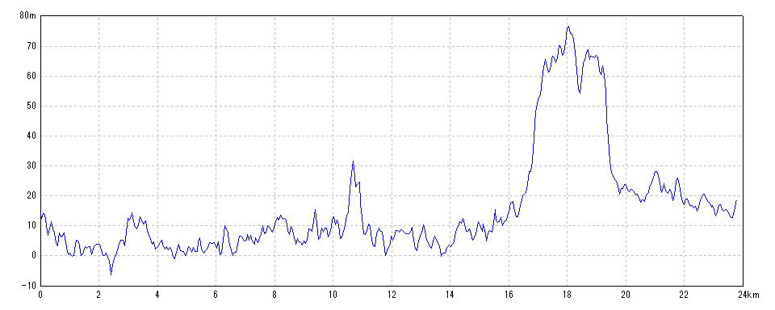
| 開始日時 | 2026/05/24 07:12:33 | 終了日時 | 2026/05/24 11:45:16 |
| 水平距離 | 23.81km | 沿面距離 | 23.89km |
| 経過時間 | 4時間32分43秒 | 移動時間 | 3時間58分22秒 |
| 全体平均速度 | 5.26km/h | 移動平均速度 | 5.98km/h |
| 最高速度 | 19.63km/h | 昇降量合計 | 627m |
| 総上昇量 | 316m | 総下降量 | 311m |
| 最高高度 | 78m | 最低高度 | -7m |
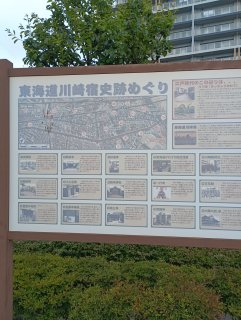
2026/05/24 07:24:39
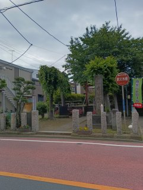
2026/05/24 07:32:57
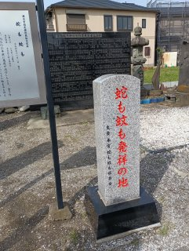
2026/05/24 07:59:30
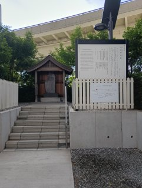
2026/05/24 08:10:09
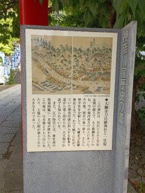
2026/05/24 08:56:39
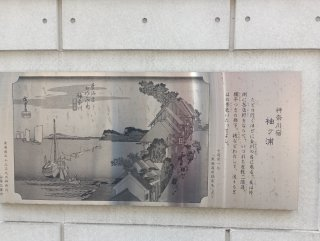
2026/05/24 08:58:10
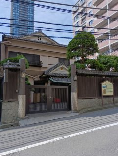
2026/05/24 08:59:25
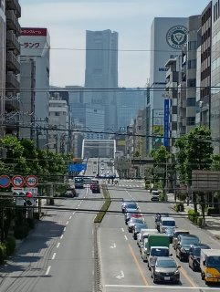
2026/05/24 09:15:48
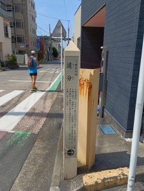
2026/05/24 09:24:27
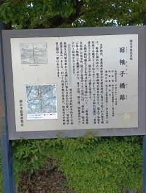
2026/05/24 09:36:35
初代広重の「東海道五十三次之内 保土ヶ谷」にも描かれている
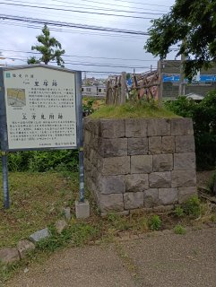
2026/05/24 10:01:51
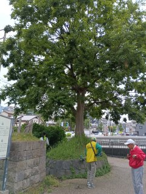
2026/05/24 10:01:59
保存会の方が、一里塚や見附について説明してくれた上に、冷たい清涼飲料水までくださった。
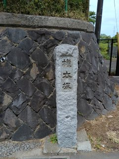
2026/05/24 10:22:28
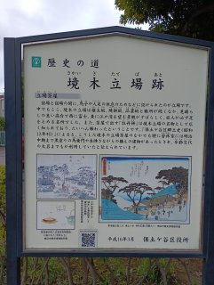
2026/05/24 10:35:39
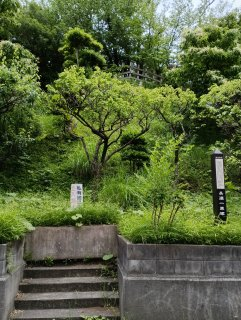
2026/05/24 10:45:30
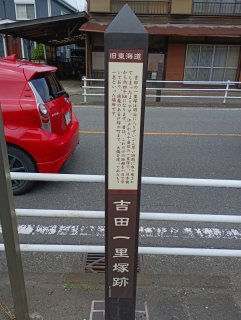
2026/05/24 11:28:51
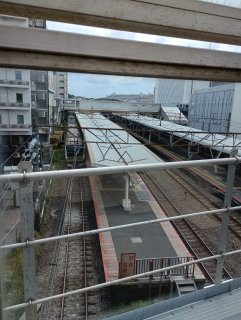
2026/05/24 11:42:11